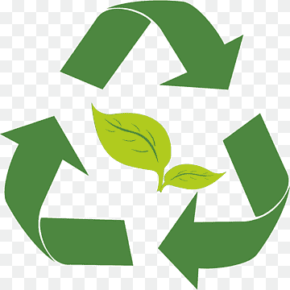

Reciclaje
¿Qué es el reciclaje?
La recolección y el procesamiento de desechos de papel y cartón, vidrio o plástico supone crear nuevos productos basados en esos mismos materiales. Una nueva oportunidad para la Tierra, a la que se puede proteger si se entienden los beneficios del reciclaje, la manera correcta separar los residuos y los retos a los que se enfrenta esta actividad en los próximos años.
 ¿Cómo podemos reciclar?
¿Cómo podemos reciclar?